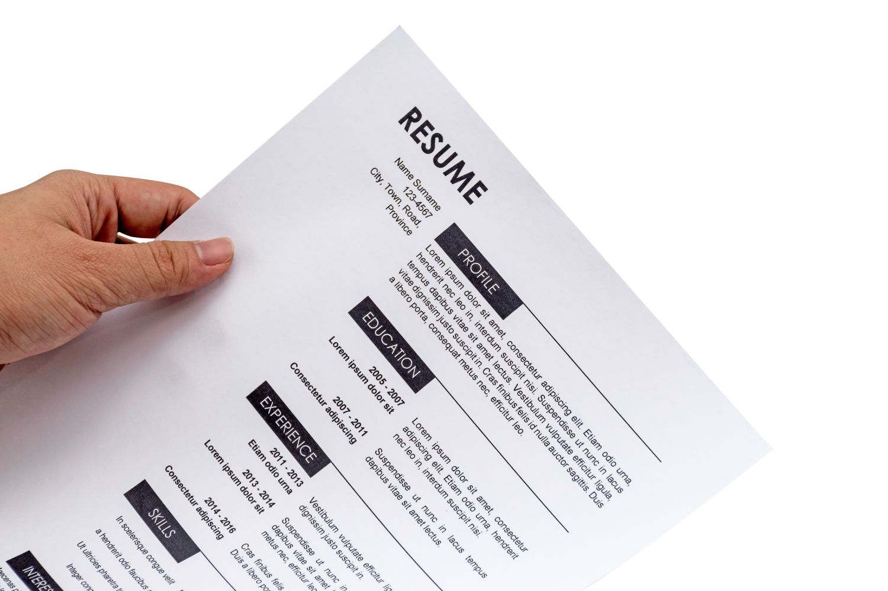

Craft a Standout Resume and Cover Letter
Craft a Standout Resume and Cover Letter

- When applying for a job, everyone must have a resume and a cover letter.
- A resume is a one or two page sheet that highlights your skills and abilities, so the employer can judge whether you are a good fit for the job or not.
- When making a resume, highlight your relevant skills, even if you don't have a lot of work experience. Employers will know that high school students will not have a lot of work experience, so don't worry yourself too much about having some sort of work experience.
- Emphasize transferable skills like teamwork, communication, problem-solving, and time management.
- Tailor your resume to each job you apply for by focusing on the skills and experience mentioned in the job description. Employers generally don't want or require excess information that is not related to the job you are applying for.
- Never, ever lie on a resume to make yourself look better. Your employer will always come to find out and you might end up in very big trouble that could leave a lifetime mark on your reputation.
- After you write you resume, which can genrally be used for multiple jobs, you must write a much more specific and personal cover letter.
- In your cover letter, address the employer by their name if possible, or begin your letter with "To whom it may concern." Explain why you are intrested in this specific job in one or two paragraphs. Tell the employer all the reasons for your applications and make sure to leave no dirty trail behing. Even a single mistake might ruin the employers first impression of you.
- At the end of the cover letter, don't be afraid to ask for an interview!
Back to Main Page